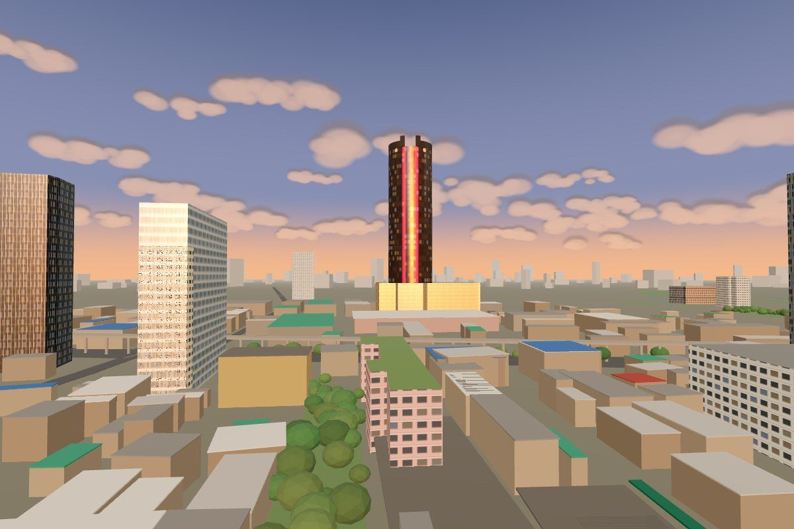
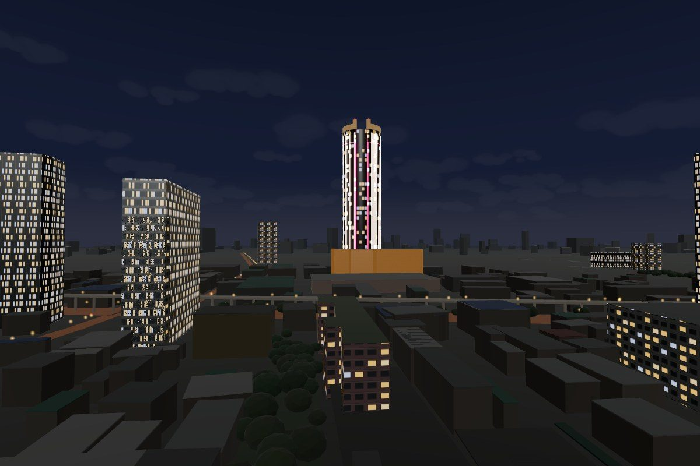
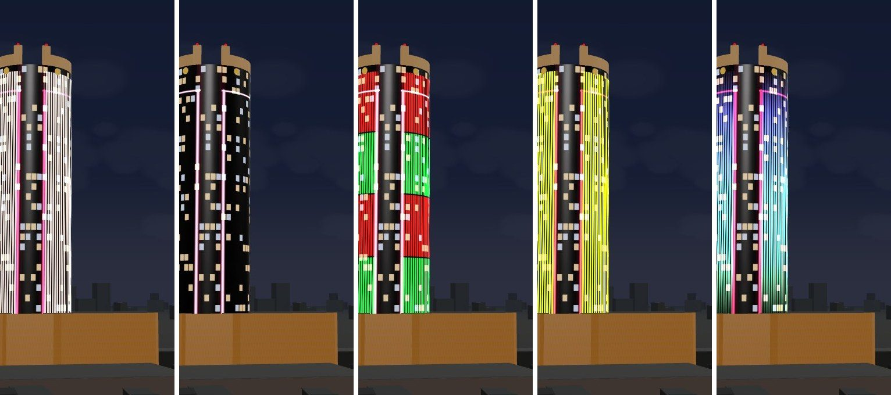

TL;DR: The rental on rooms.rr2.dev now has the real city outside its windows, built from open map data, with four times of day and a tall building that lights up at night. The camera glides between views instead of cutting, the walkthrough shows each room whole, and the kitchen blinds match the scan.
New
- Real view outside: buildings, roads, trees and the skytrain, from open map data.
- Four times of day: morning, midday, sunset and night. At sunset the glass towers catch the sun.
- Tall building lights up at night: tap it for five lighting patterns, based on my photos.



Smoother
- Camera moves: it flies between views instead of cutting, in about a second.
- Walkthrough: Next room fast-forwards along the route.
- Wider walkthrough view: a wider lens on phones, and stops moved back, so you see each room whole.
Closer to the scan
- Kitchen blinds: warm cream slats with brown ladder tapes, matched to the scan.
Under the hood
- Map data: Overture tiles decoded in the browser, with positions stored in metres and no coordinates in the code.
- Flicker fix: a logarithmic depth buffer, since the camera sees from 5 cm to 5 km.
- Route check: a script makes sure the walkthrough path never clips walls or furniture.
Also: new ACs, footsteps, and the page moved to /rental/, with old links redirecting.